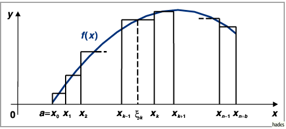

Kapitel 8: Integralrechnung
- 1. Integralrechnung und unbestimmtes Integral:
- Die Integralrechnung stellt im folgenden Sinne die Umkehrung der Differentialrechnung dar: Während bei der Differentialrechnung zu einer gegebenen Funktion f(x) die Ableitung f'(x) zu bestimmen ist, wird in der Integralrechnung zu einer gegebenen Ableitung f'(x) eine Funktion gesucht, deren Ableitung mit der vorgegebenen übereinstimmt. Dieser Prozeß ist nicht eindeutig und führt auf den Begriff des unbestimmten Integrals.
- 2. Bestimmtes Integral:
- Geht man von der anschaulichen Aufgabenstellung der Integralrechnung aus, den Inhalt der Fläche unter der Kurve y = f(x) zu bestimmen, indem man diesen z.B. durch hinreichend schmale Rechtecke approximiert (s. Abbildung), dann kommt man zum Begriff des bestimmten Integrals.

- 3. Zusammenhang zwischen unbestimmtem und bestimmtem Integral:
- Den Zusammenhang zwischen den genannten Integralarten vermittelt der Hauptsatz der Integralrechnung.